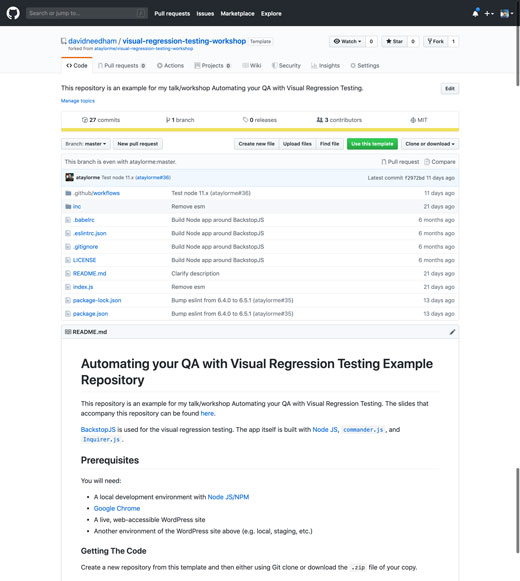

Hi, my name is...
Where are you from?
What do you do with Drupal?
Name one accomplishment.
Agenda
Intro and setup Visual Regression Testing BackstopJS Continuous Integration Q&A // Breakout Sessions
Logistics
You need:
A local dev environment with NodeJS/NPM
A website with:
A live, web-accessible website
A local copy (or development site)
Windows users need Python installed
Afer class, install BackstopJS globally to keep going
Visual Regression Testing
What is Visual Regression?
re·gres·sion
/rəˈɡreSH(ə)n/
noun
a return to a former or less developed state.
Visual Regression: The New Pixel Perfect
The Power of Machine Vision
Diligent Difference Detection
Easy to create, quick to run
Powered by Wraith or BackstopJS
Visual Regression Benefits
"Reference vs Test" Comparison
Reference (production)
Test (environment to compare)
Support for multiple viewports
Easily scan your entire site
Helpful error reporting
Easy to write tests
Visual Regression Limitations
Lots of noise in the testing process
High number of false negatives
Difficulties with dynamic content
Security updates as a killer use case
Security updates & visual changes
What's the difference? Nothing!
BackstopJS
BackstopJS automates visual regression testing like a boss!
Render with headless Chrome, Phantom, and Slimer
Simulate user interactions with ChromJS and CasperJS scripts
Browser reports with visual diffs , CLI reports and JUnit reportsPlays nice with CI and source control
Run globally or locally as a standalone packaged app with Node
Incredibly easy to use: just 3 commands go a long, long way!
github.com/garris/BackstopJS
Clone the example repo
We've created an example repo that we're going to clone to give you a jumpstart.
There are detailed instructions in the README to run through this on your own next time.
Today we're going to get started by cloning the repo:
git clone https://github.com/davidneedham/Visual-Regression-Testing-BackstopJS-demo.git

Run the example
Change into the folder cd Visual-Regression-Testing-BackstopJS-demo
Checkout a new branch git checkout -b my-hacking-1
Install Node dependencies npm install
Run the example script npm run start
Wait for the results (it should open in your browser automatically)
Backstop.json file
{
"viewports": [
{
"name": "phone",
"width": 320,
"height": 480
},
{
"name": "tablet_v",
"width": 568,
"height": 1024
},
{
"name": "tablet_h",
"width": 1024,
"height": 768
},
{
"name": "desktop",
"width": 1920,
"height": 1080
}
],
"scenarios": [
{
"label": "Homepage",
"url": "https://dev-wp-quicksilver-demo.pantheonsite.io/",
"referenceUrl": "https://scalewp.io/",
"hideSelectors": [],
"selectors": [
"document"
],
"readyEvent": null,
"delay": 1500,
"misMatchThreshold" : 0.1
}
],
"paths": {
"bitmaps_reference": "backstop_data/bitmaps_reference",
"bitmaps_test": "backstop_data/bitmaps_test",
"compare_data": "backstop_data/bitmaps_test/compare.json",
"casper_scripts": "backstop_data/casper_scripts"
},
"engine": "chrome",
"report": [ "browser", "CI" ],
"casperFlags": [],
"debug": false,
"port": 3001
}
Hacking the example (pt 1)
Edit includes/backstop.json
Set referenceUrl in scenarios to your production site URL
Set url in scenarios to your local / development URL
Start your local environment if needed
Rerun the script with npm run start
Wait for the results (it should open in your browser automatically)
Hacking the example (pt 2)
Edit includes/backstop.json
Try changing viewports or adding more scenarios to test other pages
Update the website on your local / development URL
Rerun the script with npm run start
Is your updated site different than production?
Scaling BackstopJS
We've tested one site at a time. What happens when you need to update all your sites? How can we scale BackstopJS?
Running the multiple site example (pt 1)
Commit your existing changesgit commit -am "All of my changes"
Checkout the branchgit checkout multiple-sites
Checkout a new branch to work ongit checkout -b my-hacking-2
Re-install Node dependiesnpm install
Rerun the example scriptnpm run start (and type a site name from the list when prompted)
Wait for the results
Running the multiple site example (pt 2)
Run the command npm run start -- --all (note the extra --)
Wait for the results (from multiple sites!)
Edit includes/sitesToUpdate.js (list of sites to test)
Try changing to one (or more) of your sites
BackstopReferenceBaseUrl is your local / development URLBackstopTestUrl is your production site URLpathsToTest is the array of URIs to test for each site
Running the multiple site example (notes)
npm run start tests a single siteAdd -- --site=my-cool-site to specify a site (no prompt)
npm run start -- --all tests all the sites in includes/sitesToUpdate.jsBackstop config doesn't have to be hard-coded JSON
See includes/backstopConfig.js for a dynamic configuration example
Automatically configuring BackstopJS
backstop-crawl is a tool for automatically generating the backstop.json file by crawling a website with NodeJS .
Great for brochure and smaller sites without tons of pages.
backstop-crawl example
Commit your existing changesgit commit -am "All of my changes"
Checkout mastergit checkout master
Checkout a new branch to work ongit checkout -b my-hacking-3
Install backstop-crawlnpm install --global backstop-crawl
Generate a new backstop.json file with backstop-crawlbackstop-crawl http://live-needham-bikes.pantheonsite.io -o includes/backstop.json --ignore-robots --reference-url http://dev-needham-bikes.pantheonsite.io
Rerun the script
Configuring BackstopJS Manually
Crawling isn't so great for larger sites with hundreds or thousands of pages.
With large sites it is best to create a backstop.json manually covering the templates you need (single, archive, landing page, etc.)
You can do this manually
Updates can be done manually
Testing can be done manually
If you can run a script while you brush your teeth, your sites can be as fresh as your mouth!
Set up a cron job
* */12 * * * /bin/bash /Users/me/Scripts/update-my-site.sh >/dev/null 2>&1
Make robots do the work!
Robots are happy to help
Lots of benefits:
Reliability
Error logging
Reporting
"Greenfield" environments
Putting it together with CI
CircleCI makes it all happen!
Easy to setup. Easy to configure.
Let robots do the work!
Share your work with others.
CI Basics: Setup
Pick a Docker container
Preinstalled: Linux + NGINX + MariaDB + PHP Define environmental variables
API + Credentials
Site specific information
CI Basics: Build
Build necessary tooling
Install BackstopJS / other tools Configure hosting platform
Setup dev environments
Copy production DB/Files
Apply udates to Dev
Update Dev instance
Notify via Slack
CI Basics: Test
Run testing
Visual regression, Behat, etc... Determine success
Apply updates
Update live instance
Notify via Slack